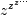

scipy.special.lambertw¶
- scipy.special.lambertw(z, k=0, tol=1e-8)[source]¶
Lambert W function [R193].
The Lambert W function W(z) is defined as the inverse function of w * exp(w). In other words, the value of W(z) is such that z = W(z) * exp(W(z)) for any complex number z.
The Lambert W function is a multivalued function with infinitely many branches. Each branch gives a separate solution of the equation z = w exp(w). Here, the branches are indexed by the integer k.
Parameters : z : array_like
Input argument.
k : int, optional
Branch index.
tol : float, optional
Evaluation tolerance.
Returns : w : array
w will have the same shape as z.
Notes
All branches are supported by lambertw:
- lambertw(z) gives the principal solution (branch 0)
- lambertw(z, k) gives the solution on branch k
The Lambert W function has two partially real branches: the principal branch (k = 0) is real for real z > -1/e, and the k = -1 branch is real for -1/e < z < 0. All branches except k = 0 have a logarithmic singularity at z = 0.
Possible issues
The evaluation can become inaccurate very close to the branch point at -1/e. In some corner cases, lambertw might currently fail to converge, or can end up on the wrong branch.
Algorithm
Halley’s iteration is used to invert w * exp(w), using a first-order asymptotic approximation (O(log(w)) or O(w)) as the initial estimate.
The definition, implementation and choice of branches is based on [R194].
References
[R193] (1, 2) http://en.wikipedia.org/wiki/Lambert_W_function [R194] (1, 2) Corless et al, “On the Lambert W function”, Adv. Comp. Math. 5 (1996) 329-359. http://www.apmaths.uwo.ca/~djeffrey/Offprints/W-adv-cm.pdf Examples
The Lambert W function is the inverse of w exp(w):
>>> from scipy.special import lambertw >>> w = lambertw(1) >>> w (0.56714329040978384+0j) >>> w*exp(w) (1.0+0j)
Any branch gives a valid inverse:
>>> w = lambertw(1, k=3) >>> w (-2.8535817554090377+17.113535539412148j) >>> w*np.exp(w) (1.0000000000000002+1.609823385706477e-15j)
Applications to equation-solving
The Lambert W function may be used to solve various kinds of equations, such as finding the value of the infinite power tower :
>>> def tower(z, n): ... if n == 0: ... return z ... return z ** tower(z, n-1) ... >>> tower(0.5, 100) 0.641185744504986 >>> -lambertw(-np.log(0.5)) / np.log(0.5) (0.64118574450498589+0j)